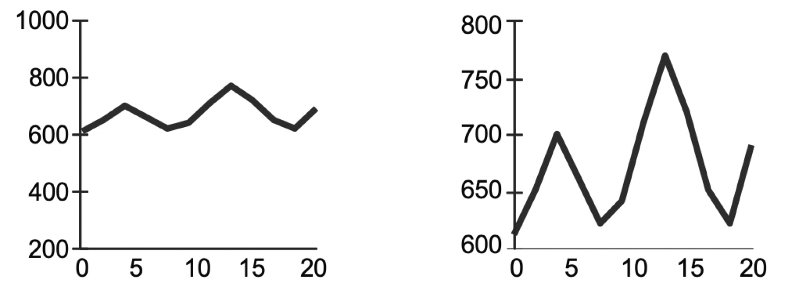

ISR ggplot2 Workshop
Georgios Karamanis
A very short introduction to ggplot2
ggplot2 is a powerful and flexible R package for creating data visualizations. It’s based on the Grammar of Graphics, a systematic approach to describing the components of a graphic.
Artwork by @allison_horst
Key features of ggplot2
- Consistent and intuitive syntax
- Layered approach to building plots
- Wide range of plot types and customization options
- Excellent for both quick exploratory plots and publication-quality graphics

Basic ggplot2 structure
A typical ggplot2 command has this structure:
ggplot(): Initializes the plotdata: The dataset you’re usinggeom_function(): Determines the type of plot (e.g.,geom_point(),geom_line())aes(): Defines how variables are mapped to visual properties
Example:
For the exercises we will use two datasets, palmerpenguins and friends_info


Before plotting, let’s look at different ways to view datasets
This displays the entire dataset, which can be overwhelming for large datasets.
head() shows the first 6 rows of the dataset, giving you a quick preview of the data structure.
colnames() lists all column names in the dataset, useful for identifying available variables.
summary() provides a statistical overview of each column, including min, max, mean, and quartiles for numeric data.
Guideline 1: Create the simplest graph that conveys the information you want to convey
Other ways to write the same code
ggplot(palmerpenguins, aes(bill_length_mm, body_mass_g)) +
geom_point()
ggplot(palmerpenguins) +
geom_point(aes(bill_length_mm, body_mass_g))Make a line plot using the friends_info dataset
First, write the code to view the first lines of the dataset and choose your variables for the x-axis (should be a time variable) and y-axis.
Then, write the code to make the line chart using geom_line()
Thanks to ggplot2’s structure, we can easily add multiple visualizations
Guideline 2: Consider the type of encoding object and attribute used to create a plot

First, run the code below to create a scatter plot (spatial position for encoding).
Then, add color = species inside aes() to add color encoding and rerun the code.
Finally, add shape = sex inside aes() and rerun the code.
Guideline 3: Focus on visualizing patterns or on visualizing details, depending on the purpose of the plot

Visualizing details
Visualizing patterns
Make a box plot for friends_info
1. Copy the code from the previous slide and paste it in the box below
2. Replace the dataset name with friends_info, use season for x and us_views_millions for y
Compare to the line chart we made before
A good way to easily see patterns is a heatmap
Guideline 4: Select meaningful axis ranges
ggplot2 automatically adjusts the axes depending on variable values
But we can change them!
1. Run the code.
2. Add limits = c(0, 100) inside scale_y_continuous() and rerun
3. Change the numbers in limits and see what happens to the line
Guideline 5: Data transformations and carefully chosen graph aspect ratios can be used to emphasize rates of change for time-series data

Let’s look at ggplot2’s mammals sleep dataset
It’s impossible to distinguish the points close to 0 when using continuous scales
Let’s see the distribution of body weight
We can use logarithmic scales for both x and y
1. Run the code
2. Remove either the line with scale_x_log10() or scale_y_log10() and rerun the code
Guideline 6: Plot overlapping points in a way that density differences become apparent in scatter plots
Let’s plot imdb_rating and us_views_millions from friends_info with really big points so that they overlap a lot
We can reduce the opacity of the points by using a lower alpha value
The highest value is 1 (default) and the lowest is 0
1. Add alpha = 0.5 inside geom_point() and run the code
2. Try out different values and rerun the code
Pitfall: Vertical axis text
Run the code and see how the labels on the x-axis overlap
1. Change the angle in the last line to rotate the text and rerun the code
2. Set the angle back to 0 and then switch the x and y variables
3. Rerun the code
Pitfall: Rainbow color scale
Run the code to see a heatmap with the default rainbow scale in R
Run the code to see a better rainbow scale
1. Replace turbo with one of the other scale names: viridis, magma, plasma, mako
2. Rerun the code

That’s all! But if you have time, one last challenge awaits on the next slide!
Final exercise: Putting it all together
Create a scatter plot using the palmerpenguins dataset that shows:
- bill_length_mm vs bill_depth_mm
- body_mass_g as point size and species as color
- Use a viridis color scale
- Add a trend line for each species
Hint
- Start with
ggplot(palmerpenguins, aes(...)) - Use
geom_point()for the scatter plot - Map
speciestocolorandbody_mass_gtosizeinaes() - Use
scale_color_viridis_d()for the color scale - Add
geom_smooth()for trend lines
ISR ggplot2 workshop · Georgios Karamanis